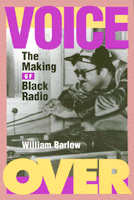

The whole story of the making of Black radio
The whole story of the making of Black radio


 The whole story of the making of Black radio
The whole story of the making of Black radio

|  |
Voice OverThe Making of Black RadioWilliam Barlowpaper EAN: 978-1-56639-667-7 (ISBN: 1-56639-667-0) |
Outstanding Academic Title, Choice, 1999
"The history of black radio, like the history of many black enterprises, starts with a fight simply to exist. That story takes up a good part of Voice Over, an extensive history that makes it clear this subject could fill a half-dozen books....Happily, nothing serves that kind of discussion as well as a sturdy foundation of history, and Voice Over tells its part of the story well."
—New York Daily News
In Voice Over, a celebration and history, William Barlow explores the entire landscape of Black radio from the early days-when the white public accepted the black-face buffoonery of "The Amos and Andy Show" and "Beulah" as a fair depiction of African-American life-to the rise of personality jocks and the contemporary scene of corporate buyouts and uncertain fate.
Barlow, whose voice has been heard on WPFW (Washington, D.C.) for many years, brings an insider's knowledge to this account of Black radio as a predominantly local and still powerful medium. Many of the broadcasters he profiles-Jack Cooper, Paul Robeson, Richard Durham, Cathy Hughes, Al Benson, Georgie Woods, Peggy Mitchell, Hal Jackson, Jocko Henderson, Mary Mason, Wesley South, Martha Jean "the Queen" Steinberg, to name a few-became not only celebrities but also respected members of their communities. Atlanta's Jack "the Rapper" Gibson, for instance, tells how he literally shared his microphone with Rev. Martin Luther King Jr. to announce meetings and rally listeners around a key issue. By showing the extent to which so many Black broadcasters achieved the status of trusted and influential community leaders, Barlow acknowledges that their grassroots activism was an indispensable and often overlooked part of the ongoing African-American civil rights movement.
Voice Over also addresses Black radio's broadly significant role in entertainment and shifting race relations. Until the rock and roll revolution, audiences had largely been segregated. The African-American personality jocks who introduced white teens to rhythm and blues were a revelation; their wild style personas and the music they played changed broadcasting while it enthralled a multiracial audience. Although the stations that introduced the enormously popular music were identified as Black, virtually none was Black-owned or managed. The broadcasters who distanced themselves from music industry perks and payoffs proposed an ambitious agenda for change. This little-known story sets the stage for how the proliferation of Black-owned stations and networks occurred and for Barlow's assessment of the instability of today's Black radio scene.
Written for a broad spectrum of readers-from nostalgic fans of Jocko and Georgie Woods to loyal listeners of surviving stations and media watchers committed to diversity in broadcasting-Voice Over tells the whole story of the making of Black radio.
Excerpt available at www.temple.edu/tempress
"Media and cultural history at its best. Voice Over offers riveting accounts of the innovations, struggles, failures, and triumphs of black radio from its beginnings to the present. Barlow's unique perspective gives its personalities and institutions long-overdue credit for their pivotal role in changing the soundscape of American music and culture."
—Herman Gray, author of Watching Race: Television and the Struggle for "Blackness"
"In the first book-length study of Pacifica Radio, Lasar recounts the history of 'our nation's only independent nonprofit [radio] network.' ...Lasar concentrates on the conflicted early years of Pacifica's development....useful as a behind-the-scenes account of Pacifica's growing pains."
—Publishers Weekly
Preface
Introduction: Shifting Voices
Part I: "I'se Regusted": Blackface Radio
1. From the Jazz Age to Jim Crow
2. The Controversial Phenomenon of Amos 'n' Andy
Part II: "New World a-Coming": Black Pride Radio
3. Brown Bombers and Black Radio Pioneers
4. "Destination Freedom"
Part III: "Rappin' the Mike": Black Appeal Radio
5. Buying Time and Making Rhyme
6. The Rise of Black Appeal Radio
7. Spin Doctors of the Postwar Era
Part IV: "Rockin' the Pot": Black Counterfeit Radio
8. The White DJ Crossover Crusade
9. The Rock-and-Roll Rebels
Part V: "Burn Baby Burn": Black Power Radio
10. "A Change Is Gonna Come"
11. Microphones in the Riot Zones
12. The FM Frontier
Part VI. "Payin' the Cost to Be the Boss": Black-Owned Radio
13. Bridging the Ownership Gap
14. Entrepreneurs with Attitude
15. Blackgrounding Public Radio
Afterword: Talking Drums
Notes
Index
William Barlow is Professor, Department of Radio, Television, and Film, at Howard University and the author of "Looking Up at Down": The Emergence of Blues Culture (Temple).
Mass Media and Communications
African American Studies
General Interest
© 2015 Temple University. All Rights Reserved. This page: http://www.temple.edu/tempress/titles/1315_reg.html.